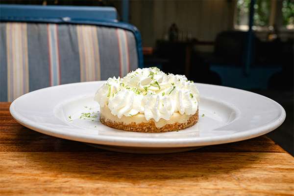

Key Lime Pie
Transport yourself to the sun-kissed shores of Florida with our irresistible key lime pie. This classic dessert captures the essence of tropical bliss—a tangy, creamy filling nestled in a buttery graham cracker crust. Whether you're hosting a summer soirée or simply craving a slice of paradise, our recipe promises a burst of citrusy flavor that'll leave your taste buds dancing. Get ready to savor every zingy bite!
Ingredients
Graham Cracker Crust:
- ⅓ of a 1-pound box graham crackers
- 5 tablespoons melted unsalted butter
- ⅓ cup sugar
Filling:
- 3 egg yolks
- 2 teaspoons lime zest
- 1 (14-ounce) can sweetened condensed milk
- ⅔ cup freshly squeezed Key lime juice, or store bought
Topping:
- 1 cup heavy or whipping cream chilled
- 2 tablespoons confectioners' sugar
Steps
- For the graham cracker crust: Preheat the oven to 350°F.
- Break up the graham crackers; place in a food processor and process to crumbs. If you don't have a food processor, place the crackers in a large plastic bag; seal and then crush the crackers with a rolling pin. Add the melted butter and sugar and pulse or stir until combined. Press the mixture into the bottom and side of a pie pan, forming a neat border around the edge. Bake the crust until set and golden, 8 minutes. Set aside on a wire rack; leave the oven on.
- For the filling: Meanwhile, in an electric mixer with the wire whisk attachment, beat the egg yolks and lime zest at high speed until very fluffy, about 5 minutes. Gradually add the condensed milk and continue to beat until thick, 3 or 4 minutes longer. Lower the mixer speed and slowly add the lime juice, mixing just until combined, no longer. Pour the mixture into the crust. Bake for 10 minutes, or until the filling has just set. Cool on a wire rack, then refrigerate. Freeze for 15 to 20 minutes before serving.
- For the topping: Whip the cream and the confectioners' sugar until nearly stiff. Cut the pie into wedges and serve very cold, topping each wedge with a large dollop of whipped cream.